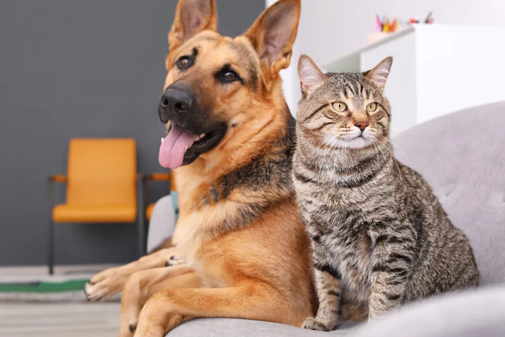

Remédio anti-pulgas
Descubra aqui os melhores remédios disponíveis para manter seu lar livre desses intrusos indesejados..
Cachorro pode tomar danoninho?
Será que os cães podem desfrutar de um pouco de Danoninho? Descubra a verdade!
Como treinar o seu peludinho

Prepare-se para desvendar os segredos do treinamento canino aqui!
Beneficios de se ter pets em casa
Prepare-se para se surpreender com os benefícios que um pet pode trazer para sua vida!
Diferença entre Cachorros Gatos

Prepare-se para desvendar as diferenças intrigantes que tornam cães e gatos tão únicos!
Cuidados com os filhotes
Explore os segredos essenciais para garantir que filhotes de cachorro e gato cresçam felizes e saudáveis! .
Confirmação
Deseja realmente prosseguir?
Recomendações remédio anti-pulgas
Quando se trata de proteger seus pets de pulgas, é essencial escolher o remédio certo.
NexGard: Um tablete mastigável com sabor de carne, contendo Afoxolaner. Começa a agir em até 8 horas e protege por 30 dias. Disponível em diferentes dosagens de acordo com o peso do cão.
Bravecto: Disponível em comprimidos mastigáveis e formato transdermal, o Bravecto trata pulgas, carrapatos e sarna demodécica. Tem efeito em até 12 horas e oferece proteção por até três meses.
Simparic: Eficaz contra pulgas e várias espécies de carrapatos, o Simparic impede que as pulgas produzam ovos.
Seresto: Uma coleira antipulgas que libera substâncias para afastar parasitas, protegendo o pet por até 8 meses.
Revolution: Trata, controla e previne infestações por pulgas, sendo uma opção segura para cães e gatos.
É crucial consultar um veterinário antes de utilizar qualquer medicamento em seu pet para garantir a escolha mais segura e adequada. Lembre-se de que a saúde e o bem-estar do seu animal de estimação são sempre a prioridade.
Cachorros podem tomar danoninho?
Em uma recente pesquisa sobre a alimentação canina, veterinários alertam para os riscos de oferecer Dadoninho aos cachorros. O Dadoninho, um produto lácteo popular entre crianças, pode não ser a melhor escolha para o seu amigo de quatro patas.
Assim como alguns humanos, muitos cães são intolerantes à lactose, o açúcar presente no leite. A ingestão de produtos lácteos como o Dadoninho pode causar desconforto gastrointestinal, incluindo gases, vômito e diarreia.
Além da lactose, o Dadoninho contém aditivos como sabores artificiais e corantes, que não são recomendados para a dieta canina. Esses ingredientes podem levar a reações alérgicas e outros problemas de saúde.
Para tutores que desejam mimar seus pets com um lanche especial, existem alternativas seguras e saudáveis. Iogurtes naturais com baixo teor de gordura e sem açúcar adicionado podem ser uma opção, mas sempre com moderação e sob orientação de um veterinário.
Antes de compartilhar seu lanche com seu cachorro, é essencial consultar um profissional. O que é saboroso para os humanos pode não ser seguro para os nossos amigos peludos. Lembre-se, a saúde do seu pet deve sempre vir em primeiro lugar.
Como treinar o seu peludinho

Treinar seu cachorro é uma parte importante do seu desenvolvimento e pode ser uma experiência gratificante para ambos.
Escolha Comandos Claros: Use comandos simples como “senta”, “fica”, “vem” e “não”. Certifique-se de que todos na casa usem os mesmos comandos para evitar confundir o cão.
Recompensas Positivas: Utilize petiscos, carinho ou brinquedos como recompensas para comportamentos positivos. Isso reforça o bom comportamento e encoraja o cão a repeti-lo.
Consistência: Seja consistente com os comandos e recompensas. Treine em um horário regular e mantenha as regras consistentes para que o cão saiba o que esperar.
Treinamento em Etapas: Comece com comandos básicos e avance gradualmente para truques mais complexos. Isso ajuda a manter o cão engajado e evita frustrações.
Paciência e Positividade: Mantenha as sessões de treinamento curtas e positivas. Seja paciente e evite punições, pois elas podem causar medo e ansiedade.
Socialização: Exponha seu cão a diferentes pessoas, animais e ambientes para ajudá-lo a se tornar bem ajustado e menos temeroso de novas experiências.
Reforço Contínuo: Mesmo após o cão aprender um comando, continue a praticar e reforçar o comportamento para manter sua obediência afiada.
Lembre-se, cada cão é único e pode aprender em ritmos diferentes. Respeite o tempo do seu cão e adapte o treinamento às suas necessidades individuais.
Diferenças entre cachorro e gatos

Ter pets em casa traz uma série de benefícios tanto para a saúde física quanto mental dos tutores.
Redução do Estresse: A presença de animais de estimação pode diminuir os níveis de estresse e ansiedade, proporcionando uma sensação de tranquilidade.
Melhora da Saúde Cardiovascular: Estudos indicam que ter um pet pode reduzir a pressão arterial e o colesterol, ajudando na prevenção de doenças cardiovasculares.
Companhia: Pets são excelentes companheiros, especialmente para idosos, ajudando a superar a solidão e incentivando a prática regular de atividades.
Prevenção de Alergias em Crianças: O convívio com animais desde cedo pode fortalecer o sistema imunológico das crianças e reduzir o risco de desenvolver alergias e asma.
Saúde Mental: A interação com pets aumenta a produção de serotonina e dopamina, neurotransmissores associados à sensação de prazer e felicidade
Exercício Físico: Passear com o pet estimula a prática de exercícios, o que é benéfico para manter um estilo de vida ativo
Desenvolvimento do Senso de Responsabilidade: Cuidar de um animal de estimação requer responsabilidade e pode ajudar no desenvolvimento desse traço, especialmente em crianças
Esses são apenas alguns dos muitos benefícios que os pets podem trazer para o lar. Eles não apenas enriquecem nossas vidas com alegria e companheirismo, mas também contribuem significativamente para nosso bem-estar geral.
Cuidados com filhotes
Bem-vindo à sua jornada emocionante de cuidar de filhotes! Aqui está um guia passo a passo para garantir que seus novos amigos peludos cresçam felizes e saudáveis:
Alimentação Adequada: Para filhotes, a nutrição é fundamental. Eles devem ser alimentados com ração específica para filhotes, preferencialmente de categoria super premium. Esses alimentos são completos e balanceados para atender às necessidades nutricionais dos jovens animais. Os filhotes de cachorro devem comer de 3 a 4 vezes ao dia, enquanto os gatinhos podem ter acesso livre à comida, pois costumam se alimentar em pequenas quantidades várias vezes ao dia.
Ambiente Seguro e Confortável: Prepare um local tranquilo e seguro para os filhotes dormirem e descansarem. Uma caminha macia, longe de correntes de ar e ruídos altos, é ideal. Para os gatinhos, uma caixa ou toca pode proporcionar um sentimento de segurança.
Higiene e Saúde: Mantenha o ambiente dos filhotes limpo. Isso inclui a limpeza regular da área de dormir e dos locais onde eles fazem suas necessidades. A caixa de areia para gatos deve ser limpa diariamente. Além disso, é importante iniciar o calendário de vacinação e vermifugação conforme recomendado por um veterinário.
Socialização e Treinamento: A socialização é crucial para o desenvolvimento comportamental dos filhotes. Exponha-os a diferentes pessoas, animais e ambientes de maneira controlada e positiva. Ensine comandos básicos e regras de casa aos filhotes de cachorro, e para os gatinhos, incentive o uso do arranhador e da caixa de areia.
Atenção e Carinho: Filhotes precisam de muita atenção e carinho. Brinque com eles, ofereça brinquedos adequados para estimular a mente e o corpo, e estabeleça uma rotina de interações positivas.
Lembre-se, cada animal é único e pode ter necessidades específicas. Consulte sempre um veterinário para orientações personalizadas. Cuidar de filhotes é um compromisso sério, mas com amor e dedicação, você ajudará a formar pets saudáveis e felizes.
Beneficios de se ter pets em casa
Seja um cãozinho brincalhão, um gato preguiçoso ou até mesmo um pássaro colorido, os animais de estimação oferecem muito mais do que simples companhia.
Companheirismo Incondicional: Os pets não apenas enchem nossas vidas com amor incondicional, mas também estão sempre presentes, independentemente do nosso humor ou situação. Eles são verdadeiros companheiros, prontos para nos animar nos momentos difíceis e compartilhar as alegrias da vida conosco.
Redução do Estresse:Estudos mostram que a presença de um animal de estimação pode reduzir significativamente os níveis de estresse e ansiedade. A interação com um animal de estimação pode diminuir a produção de cortisol, o hormônio do estresse, e aumentar a liberação de endorfinas, promovendo assim uma sensação de calma e bem-estar.
Incentivo à Atividade Física: Ter um pet muitas vezes significa mais tempo gasto ao ar livre, seja caminhando com seu cachorro, brincando com seu gato ou até mesmo correndo atrás de um pássaro. Isso não só beneficia a saúde física do dono, mas também fortalece o vínculo entre o pet e seu humano.
Melhora da Saúde Mental: Além de reduzir o estresse, os animais de estimação também podem melhorar nossa saúde mental de outras maneiras. Eles nos fornecem uma sensação de propósito, responsabilidade e conexão social, especialmente importante para aqueles que vivem sozinhos ou enfrentam condições como depressão ou ansiedade.
Aumento da Socialização: Passear com seu cão ou participar de eventos de pets é uma ótima maneira de conhecer novas pessoas e construir amizades. Os animais de estimação servem como um ponto de partida natural para interações sociais, ajudando a reduzir o isolamento e a solidão.